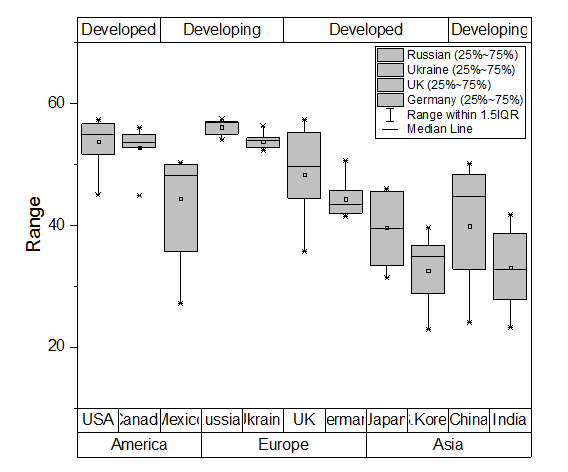

不釣合いなデータのグループ化ボックスチャート
UnbalanecedGroupedBoxChart
サマリー
Originは、素データからカスタム化した表形式の軸付きの不釣合いなグループ化ボックスチャートの作図が可能です。

必要なOriginのバージョン: Origin 2015 SR0以降
学習する項目
このチュートリアルでは、以下の項目について説明します。
- 素データから不釣合いなグループ化ボックスチャートを作成
- グラフの上軸に行を追加し、更なるグループ情報を追加する
- 軸表を編集
ステップ
素データによるボックスチャートの作図
このチュートリアルは、チュートリアルデータプロジェクト（<Origin EXE フォルダ>\Samples\TutorialData.opj）と関連しています。
- チュートリアルデータプロジェクトを開き、Unbalanced Grouped Box Chart フォルダにブラウズします。
- Book3ワークブックをアクティブにします。
- A列以外の全ての列を選択し、メニューから作図>カテゴリカル：グループ化したボックスチャート - 素データを選択して、Plotting: plotgboxrawダイアログを開きます。ダイアログで、グループ番号を2に、第1グループの行をContinentsに、第2グループの行をCountryに設定します。これにより、ワークシート上のラベル列であるグループを元に、2つ分類項目を持つ3つのグループに配置された列データでボックスチャートを作成します。
- OKボタンをクリックします。凡例を選択してから削除します。素データからのグループ化ボックスチャートは、以下のように2つのグループレベルで作成されます。
軸の表を編集して不釣合いなグループ化グラフを表示する
- 色とサブグループ間の間隔を調整して見やすくしましょう。まず、全てのボックスを灰色に変更するところから始めます。メインメニューのフォーマット： 作図の詳細（プロット属性） を選びます。作図の詳細ダイアログで、グラフグループタブを開きます。境界色の推移をなしに、サブグループもなしに設定します。これで、ボックスの境界線は色推移に従わずに設定できます。
- パターンタブを開き、下図のように設定します。
- 間隔タブを開きます。サブグループ間の間隔(%)を0にして、サブグループ間の間隔を取り除きます。
- OKをクリックして、設定を適用します。これで、不釣合いなグループ化ボックスチャートは、最初の画像に近づきました(ラベルは後ほど編集します)。
グラフの上に軸の行を追加する
グラフの上軸に表を1行分追加し、追加のグループ化情報を入力します。
- 軸ダイアログを開きます(フォーマット：軸目盛のラベル：X軸目盛)と操作します。目盛ラベルが開かれていることを確認し、左側パネルで下1のみを選択します。
- 目盛ラベルタブの中で表タブを開き、行数を3にします。
- 左側パネルで追加された下3アイコンを選択します。表示タブを開き、表示のドロップダウンでRankを選択します(これは、ワークシートの他の列です)。

- 適用ボタンをクリックして、グラフを更新します。新しい表の行が下軸に追加されたことが分かります。では、次に、グラフの上軸を編集します。

- 下3上で右クリックし、反対へ移動を選択します。
- OK をクリックして、変更を適用します。
- 
詳細な編集
では、更に編集を重ねて、このチュートリアルの最初に紹介したようなグラフにしましょう。
- グラフの下にある表をダブルクリックして軸ダイアログを開きます。目盛ラベルタブを開き、左側パネルで下1アイコンだけを選択します。
- 表タブを開き、下1軸に対してグラフと反対側の罫線のチェックを外します。
- 左側パネルで下2アイコンを選択し、そのまま開いている表タブ内の自動チェックを外します。そして、境界線(内側)と境界線(外側)のチェックを外します。
- 左側パネルで上1アイコンを選択してグラフと反対側の罫線、境界線(内側)、境界線(外側)のチェックを外します。セル始めの刻みとセル終わりの刻みにはチェックを付けましょう。
- 適用ボタンをクリックします。次に軸と軸目盛タブを開きます。主目盛の下にあるスタイルを内側と外側に設定します。
- グリッド線タブを開きます。左側パネルで垂直が選択されていることを確認して主目盛線と副目盛線の設定を色＝黒、スタイル＝点線、太さ＝0.5に設定します。

- 適用をクリックしてから、スケールタブを開きます。左側パネルで垂直アイコンをクリックし、タイプをLog10に設定します。他の設定も下図のようにしましょう。
- 目盛ラベルタブの表示タブを開きます。左側パネルで左が選択されていることを確認し、ラベル接尾語に％を入力してY軸の目盛ラベルに表示します。
- OK をクリックして、今までの変更を適用します。
- メニューでフォーマット：作図の詳細(ページ属性)を選択します。幅＝14.0に設定します(高さの設定はそのままで問題ありません。)
- グラフの中のCountry ラベルをダブルクリックし、目盛ラベルのフォーマットタブでサイズ＝14に設定します。
- テキストツールを選択してグラフ中のどこかをクリックし、グラフのタイトルとして「Female Tertiary Education (ISCED 5 and 6) Enrollment」を入力します。そしてY軸のタイトルを「Enrollment Rate」に設定しましょう。